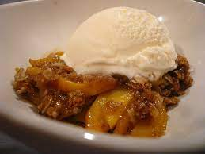

Peach Cobbler

Description
This recipe is based on a cobbler I used to make in bulk at a southern barbecue restaurant. It is very sweet, and thus is well suited to American tastes. It pairs very well with vanilla ice cream, but it is also great on its own, hot or cold.
Ingredients
- 2 29 oz cans of sliced peaches in heavy syrup
- 2 1/3 cup whole milk
- 2 1/3 cup self rising flour
- 2 1/3 cup granulated sugar
- 1 1/3 sticks of butter
- 1 capful vanilla extract
Steps
- Preheat oven to 350 F
- Open and drain peaches, and then arrange them in a flat layer